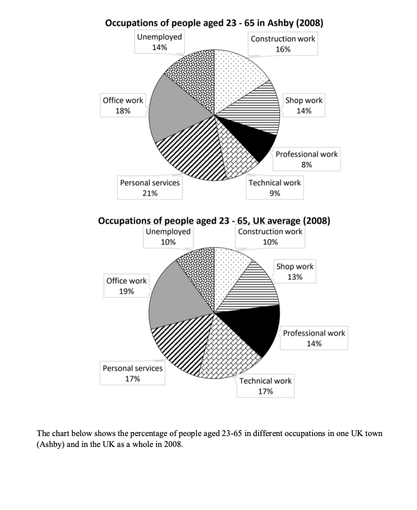

Article
Read the article, then confirm below to continue.
A helping hand
New technologies will radically change the experience of living with and caring for someone with Alzheimer's, says Fiona Carragher.
📄 Open articleComprehension & vocab
Questions on the article you just read, plus ten key words from it.
Comprehension
1. According to the article, what does the author say about lecanemab?
2. According to the article, how many people are living with dementia globally, and how is that expected to change by 2050?
3. According to the article, what is the Longitude Prize on Dementia, as described in the piece?
4. According to the article, what do the high-tech glasses developed by Animorph Co-operative do?
5. According to the article, what does Clairvoyant Networks' technology aim to predict and prevent?
6. According to the article, what does the author believe about these new technologies overall?
Vocabulary
Writing Task 1: the article
Background reading on regional vs. national employment — study the highlighted language before you write.
■ subject synonyms ■ useful Task 1 chunks
Labor Market Composition and Employment Sector Divergence: Localized Profiles Versus National Economic Baselines
Analyzing working-age employment distribution across localized municipalities relative to broader national averages reveals key structural characteristics of regional economies. Comparative workforce mapping highlights how regional industrial bases, infrastructure specialization, and localized labor demands create significant sector-specific divergences from national occupational norms.
Occupational Sector Breakdown and Structural Differences
Workforce participation across major employment sectors exhibits notable variations when contrasting regional municipalities with macro-level national distributions:
Service and Manual Labor Dominance: Localized municipal economies often exhibit higher concentrations of employment in consumer-facing personal services, trades, and site-based labor. Demand for localized services and construction activity frequently exceeds nationwide baseline proportions, reflecting regional infrastructure investments and community service requirements.
Specialized Knowledge and Technical Roles: High-skill technical roles and specialized professional occupations demonstrate the largest structural deficit in localized regional markets compared to national averages. Nationally, skilled technical fields and professional services command a significantly larger share of the total workforce, driven by centralized corporate hubs and specialized innovation clusters.
Administrative and Retail Parity: Core administrative roles, clerical office employment, and commercial retail positions maintain consistent alignment between regional towns and national figures. These sectors form a stable baseline across geographic tiers, reflecting uniform operational needs across public and private organizations regardless of location.
Unemployment Dynamics and Labor Friction: Regional labor markets often experience elevated baseline unemployment rates relative to nationwide figures. Structural transitions, geographic mobility constraints, and localized skills mismatches contribute to increased joblessness outside primary economic hubs.
Comparative Occupational Matrix: Regional vs. National Distribution
| Economic Sector | Regional Municipality Profile | National Average Profile | Structural Divergence Factors |
|---|---|---|---|
| Personal Services & Support | Leading Local Sector | Moderate Presence | Driven by localized community demand and regional service economies. |
| Construction & Physical Trades | Elevated Representation | Baseline Share | Boosted by regional development, housing projects, and local trades. |
| Clerical & Office Administration | High, Stable Share | Dominant Sector Share | Demonstrates structural parity; essential administrative overhead across all markets. |
| Retail & Commercial Sales | Moderate, Balanced Share | Moderate, Balanced Share | Reflects baseline consumer retail demand across population centers. |
| Technical & Specialized Fields | Constrained Presence | Major Growth Segment | Geographic centralisation of tech hubs and industrial research centers nationwide. |
| Professional & Executive Roles | Subdued Share | Substantial Workforce Block | High-level corporate roles concentrate heavily in major economic centers. |
| Unemployed Cohorts | Elevated Rate | Baseline Rate | Regional labor market friction and reduced localized job diversification. |
Task 1 report
Mini exam block — write your response with the stopwatch running.
The chart below shows the percentage of people aged 23-65 in different occupations in one UK town (Ashby) and in the UK as a whole in 2008. Summarise the information by selecting and reporting the main features, and make comparisons where relevant. Write at least 150 words.

Sample answer
Model response, with useful comparison language marked.
The two pie charts compare the proportions of 23-65-year-olds in Ashby and the UK overall across occupation categories (including unemployment) in 2008.
Overall, Ashby had higher proportions of workers in personal services and construction, whilst technical and professional roles were notably less common compared to national figures. Additionally, unemployment in Ashby was higher than the UK average.
In Ashby, personal services accounted for the largest group at 21%, 4 percentage points higher than the national average. The construction sector followed with 16%, compared to just 10% across the UK. Similarly, the unemployment rate was higher in Ashby at 14%, whereas the UK figure stood at 10%.
By contrast, the proportion of technical workers in Ashby was just 9%, nearly half the UK average of 17%. A similar gap was recorded in professional work, where Ashby represented only 8%, markedly lower than the UK's 14%. The proportion of people employed in office roles was relatively similar in both groups, with 18% in Ashby and 19% nationally. Shop work figures were nearly identical, at 14% and 13% respectively.
Reading Practice
Open the test in a new tab, complete it, then come back here.
Speaking Part 2 & 3
Choose a topic set below. You only get one attempt per question, so make sure you're ready before you start recording.
Video & comprehension
Watch, then answer the questions below.
1. According to the proverb mentioned at the beginning, what does the person who tells the story have?
2. According to the video, what can stories potentially do?
3. What did the research suggest happened to people after reading chapters of Harry Potter?
4. What psychological experience can happen when we become deeply involved in a story?
5. According to the speaker, what happens when you read the word “jump”?
6. According to one theory, what may help explain why people become immersed in stories?
7. How can fictional characters sometimes affect readers?
8. What effect can connecting with fictional characters have on people?
9. According to the video, stories can be particularly effective in changing people's opinions about what?
10. What was found to improve attitudes towards stigmatised groups in the Harry Potter research?
Gap Fill
Word box: persuade · immersed · populate · activate · mirror · fictional · surrogate · lonely · self-esteem · controversial · attitudes · identified · prejudice · stigmatised · relationship
1. Stories have the potential to be incredibly powerful and can help people.
2. A good story can make readers feel fully in another world.
3. When reading, people mentally create and worlds with cities and people.
4. Reading an action word such as “jump” can areas of the brain connected with that action.
5. One theory suggests that the neuron system may help explain our immersion in stories.
6. People can form connections with characters, even though they are not real.
7. Such characters can sometimes act as a social for readers.
8. Connecting with fictional characters can make people feel less .
9. Fictional relationships can also help buffer and improve mood.
10. Stories may be particularly effective at changing opinions about topics.
11. Research suggests that stories can influence people's towards certain groups.
12. The effects of reading Harry Potter were stronger when readers with Harry.
13. Stories can potentially change and help people relate to others differently.
14. Attitudes towards groups may be improved through stories.
15. Having friendships can have positive effects on the outcomes of a .
Vocabulary Matching
Day 22 complete! 🎉
All 8 tasks done. Come back tomorrow for the next day.